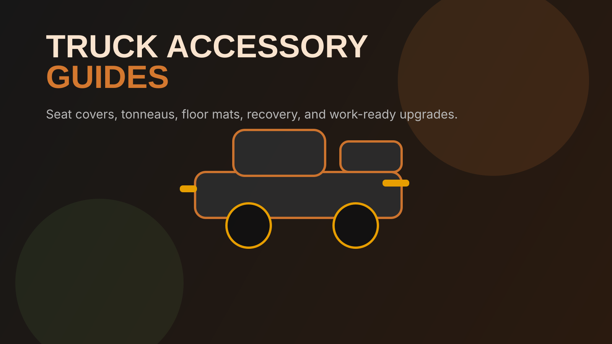

Your truck deserves better than guesswork. We analyze thousands of reviews, compare real-world performance, and rank the accessories that actually hold up — from seat covers to recovery gear. No sponsorships. No fluff.
Read the Buyer's Guide
A truck isn't just a vehicle — it's a tool. The right accessories protect your investment, improve functionality, and make every trip better. The wrong ones fall apart in six months and end up in a landfill. We're here to help you tell the difference.
Our rankings prioritize products with 4.5+ star ratings from 1,000+ verified reviews, low return rates, and proven durability. We also highlight American-made products when they outperform the imports — because sometimes paying more upfront saves you money long-term.
Every recommendation is backed by review data, return rate analysis, and real-world testing. No paid placements.
From mil-spec Bartact covers to budget-friendly Coverado — ranked by vehicle and durability.
See Rankings →Hard fold, soft roll, retractable — we break down BAKFlip, Gator, TruXedo, and more.
See Rankings →WeatherTech vs Husky vs 3D MAXpider. Vehicle-specific picks that actually fit.
See Rankings →DECKED drawers, cargo nets, dividers — keep your gear locked down and organized.
See Rankings →Kinetic ropes, shackles, winches, and recovery boards for when the trail fights back.
See Rankings →Protect yourself with front and rear coverage. Viofo, Garmin, and Rexing compared.
See Rankings →Truck-rated mounts that handle vibration and rough roads without dropping your phone.
See Rankings →Leveling kits, suspension lifts, and body lifts — what works and what's a waste of money.
See Rankings →Vehicle-specific accessory guides with exact fitment recommendations.
The mid-size king. Bartact seat covers, TRD skid plates, Prinsu racks, and more.
See Tacoma Picks →Built for the trail. Bartact covers, roof racks, bumpers, and recovery essentials.
See 4Runner Picks →America's best-seller. Tonneau covers, floor mats, bed organizers, and seat covers.
See F-150 Picks →| Feature | Bartact | Coverado | OASIS AUTO | Rough Country |
|---|---|---|---|---|
| Made In | USA (Temecula, CA) | China | China | China |
| Material | Mil-Spec Cordura | Faux Leather | Faux Leather | Neoprene |
| SRS Airbag Compatible | Yes | Varies | Varies | Yes |
| Berry Compliant | Yes | No | No | No |
| Price Range | $400–$700 | $60–$150 | $80–$180 | $200–$350 |
| Best For | Off-road / Heavy Use | Budget Protection | Luxury Look | Mid-Range Durability |
| Warranty | Lifetime | 1 Year | 1 Year | Limited |
For Tacoma, 4Runner, Jeep, and Bronco owners: Bartact is the clear winner — mil-spec fabric, made in the USA, SRS airbag compatible, and a lifetime warranty. Yes, they cost more upfront, but you'll never buy seat covers again. For F-150, Silverado, and RAM owners: Coverado and OASIS AUTO offer the best value, with Rough Country as a solid mid-range option. Read our full seat cover rankings for vehicle-specific picks.